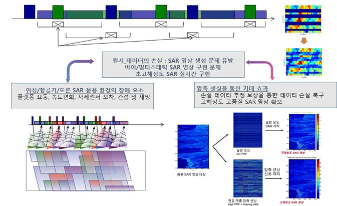
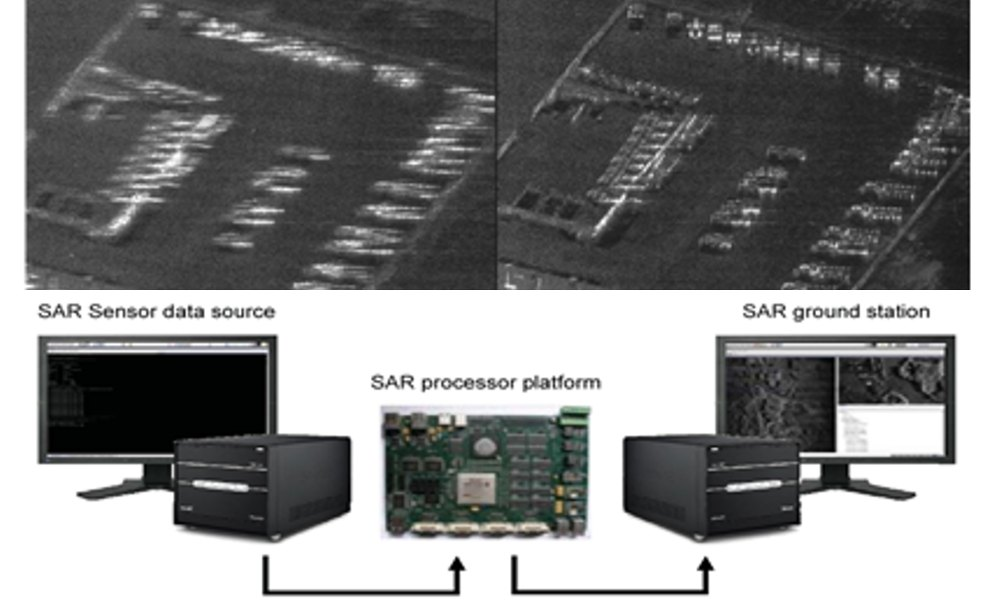

연구 분야
차세대 SAR 연구 및 인력양성

개요
차세대 SAR 국방특화연구실은 1) 바이스태틱/멀티스태틱 SAR, 2) 압축센싱 SAR, 3) 비디오 SAR 등 3개의 세부 첨단 연구 과제를 수행한다. 미래 전자전에서는 고해상도 SAR에 기반한 광역 감시망을 실시간으로 구현할 필요가 있으며, 이를 위해서는 복수의 위성, 항공기, 드론에 장착된 SAR 탑재체를 상호 유기적으로 운용해야 한다. 다양한 전장 환경에 필요한 초고해상도 및 실시간 SAR 체계를 구현하는 동시에 성능의 극대화에 필요한 다양한 관련 기술 연구를 수행한다. 궁극적으로는 위성, 항공기를 포함하여 첨단 드론봇 부대에서도 운용 가능한 SAR 기술 모드를 연구하고, 다양한 전략적 자산이 상호 유기적으로 운용되어 미래 지능형 정찰 기능을 창의적으로 개발하고 실제적으로 활용될 수 있는 첨단 연구실의 역할을 수행한다. 고급 정찰 기능을 수행하는 SAR 시스템의 체계 개발을 수행하고, 미래 전장에서 핵심 기능을 수행할 수 있는 첨단 기술 이론을 실험적으로 개발하여 이를 실제 환경에 적용할 수 있는 SAR 운용 실험 환경을 갖춘 미래형 종합 SAR 연구실을 지향한다.
세부 연구
바이/멀티스태틱 SAR 영상 형성 기술
위성, 항공기, 드론으로 구성되는 2기 이상의 복합 플랫폼에서 바이스태틱/멀티스태틱 SAR 영상 형성 기술을 연구하여 M&S를 수행하고 소프트웨어를 확보한다. 또한 바이스태틱/멀티스태틱 환경에서 정밀 알고리즘을 구현하여 모노스태틱 SAR 대비 넓은 영역에서 표적의 품질을 개선하고 SNR을 향상시킨다. 이동 표적이 존재하는 환경에서 이를 탐지·추적하는 알고리즘을 연구하여 M&S를 수행하고 영상형성 소프트웨어와 통합한다.
압축센싱 기반 고해상도 SAR 영상기술
위성, 항공기, 드론 기반의 다중 탑재체가 복수로 운용될 때 플랫폼의 요동이나 인위적인 재밍 등에 의해 발생하는 데이터의 손실에 대처하여 SAR 영상 품질을 유지하고 실시간 SAR 영상 데이터를 제시할 수 있는 기반 기술을 확보한다. 운용 시나리오에 따라 데이터 손실 발생 시에도 최대 GMTI 탐지 성능을 유지하고, 요동보상과 자동초점기능으로 초고해상도 SAR 영상을 구현한다.
비디오 SAR 영상 생성 신호처리 기술
실시간 고품질 비디오 SAR 영상처리를 위한 신호처리 기술을 연구하고, 복합 하드웨어 플랫폼 구현을 위한 소프트웨어/하드웨어 최적화 기반 기술을 확보한다. 대용량 비디오 SAR 데이터를 처리하기 위한 실시간 저장 장치 및 자료 압축 방안을 연구하며, GMTI 및 표적인식의 AI 활용을 위한 실시간 고품질 비디오 SAR 빅데이터 확보를 위한 테스트베드를 구현한다.
관련 과제
- 국방특화연구실 “차세대 SAR 연구 - 2단계” (연구실장) (2022–2025)
- 위성 SAR 기반 이동 표적 탐지 연구 (2022)
- 위성 SAR 시스템에 재밍 효과 분석 연구 (2022)
- 국방특화연구실 “차세대 SAR 연구 - 1단계” (연구실장) (2019–2022)
- 무인기기반 차세대 SAR 탑재체 (2019)
- 멀티스태틱 PCL 시스템 기술 분석 연구 (2019)
관련 논문
- 멀티스태틱 SAR에서 공통 희소성 기반 압축센싱을 이용한 영상 복원 성능 향상 (2025)
- 바이스태틱 SAR 영상 구조에 적용 가능한 병렬 압축센싱 기반 Back-Projection 알고리즘 실험적 검증 (2025)
- 바이스태틱 SAR에서의 재밍 신호 억제와 압축센싱 기반의 신호 복원 및 품질 개선 (2024)
- 지상 레이다에 의한 위성 SAR 재밍 시나리오 설계 및 효과 분석 (2024)
- Warp-Based Stabilization for Autofocused Video SAR Sequences (2024)
- FPGA-Based Acceleration of Polar-Format Algorithm for Video Synthetic-Aperture Radar Imaging (2024)
- Architecture Exploration of a Backprojection Algorithm for Real-Time Video SAR (2021)
- 근거리 이동 표적 Video SAR 영상 생성을 위한 압축센싱 기반 지상 이동 표적 탐지 기법 (2021)
- 압축센싱 기반 SAR 영상 복원 가속화를 위한 랜덤 하이브리드 첩-센싱 행렬 구현 (2021)
- Drone SAR Image Compression Based on Block Adaptive Compressive Sensing (2021)
- FPGA Implementation of the Chirp-Scaling Algorithm for Real-Time Synthetic Aperture Radar Imaging (2023)
- FPGA Implementation of the Range-Doppler Algorithm for Real-Time Synthetic Aperture Radar Imaging (2021)
- Compressive SAR Imaging Based on Modified Low-Rank and Sparse Decomposition (2025)
- Wide Swath SAR System Design and Quality Analysis Based on Orthogonal Noise Waveforms (2019)
- 적응형 압축센싱 기반의 드론 SAR 시스템을 이용한 저피탐 은폐물 탐지 (2021)
- Squint 빔 분할을 통한 고해상도 SAR 영상 구현 (2020)
- Experimental operation of drone micro‐SAR with efficient time‐varying velocity compensation (2017)
- 드론을 활용한 초소형 SAR 영상 구현 및 품질 보상 분석 (2016)
연구 사진·도식

